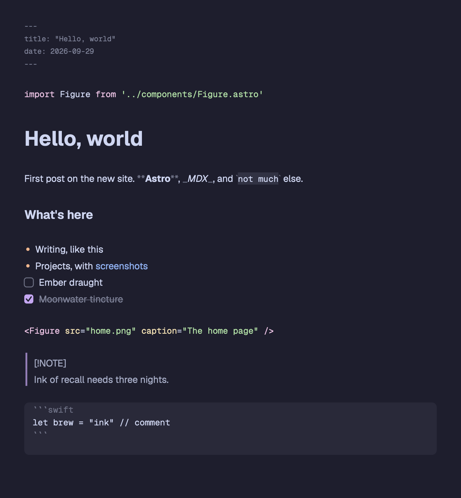
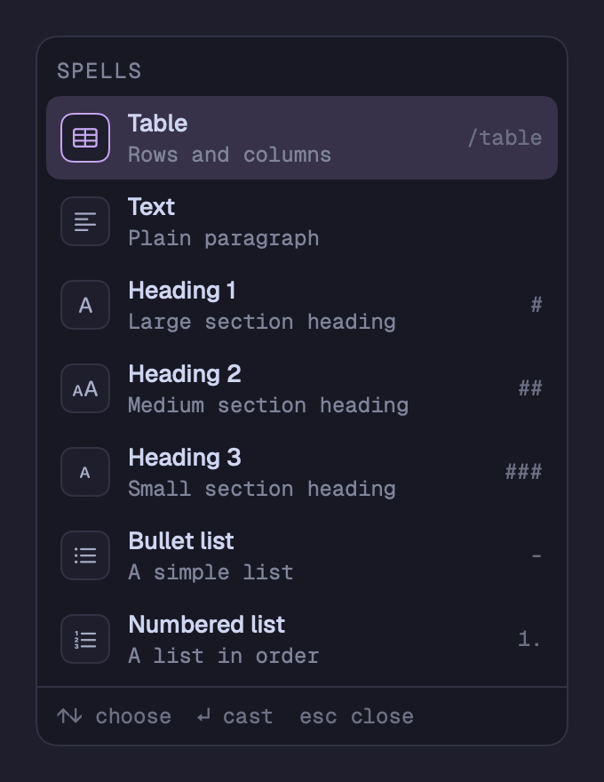
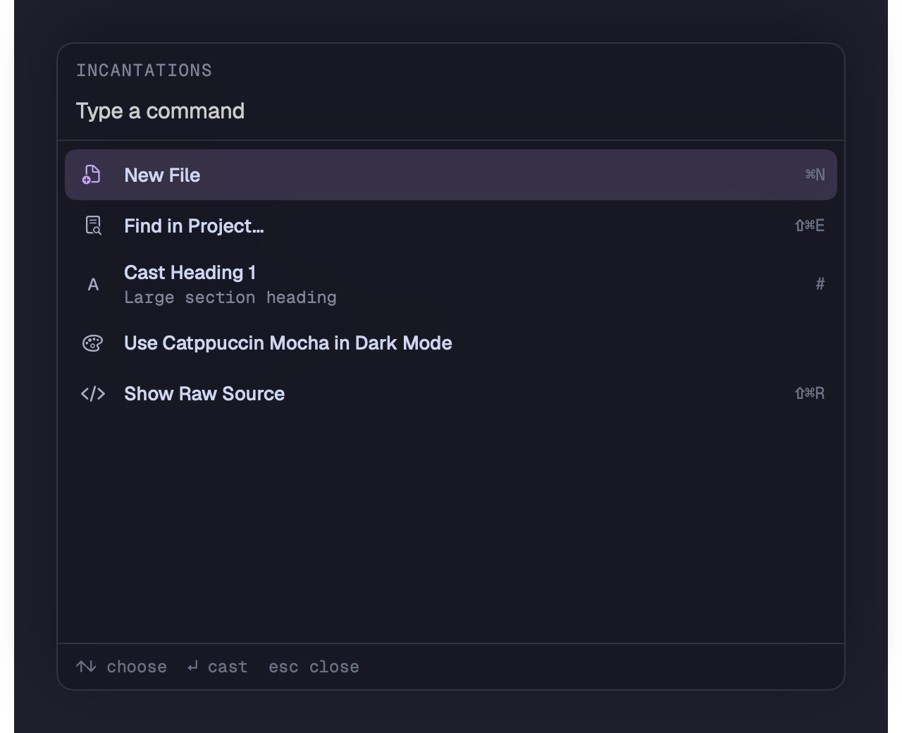
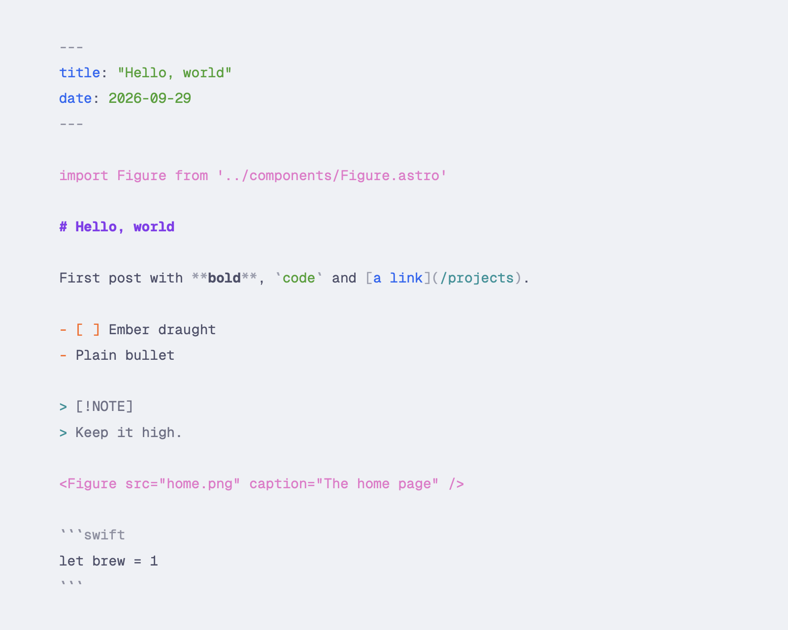

Write your
own magic
A native markdown editor for Mac, with editable blocks and ordinary files in folders you own.
Download betaBeta for macOS 27 or later.

Cast a block
From a thought to a heading, a task or a table. Keep your hands on the keyboard.



Plain .md and .mdx.
On your disk. In your folders.
Your files,
your words
No database, no account, no sync service. Bind one or more folders to a project and start writing.
Themes
Catppuccin, Dracula, Nord and more. Choose light and dark themes, fonts and sizes, or import a VS Code theme.
Focus
Hide the chrome with ⇧⌘F, dim other sentences or cap your line length.
Version history
Browse earlier versions and restore a page. In a git repository, see changes since the last commit.
Tables
Edit cells as a grid. Use Tab and Return, add rows or columns, and paste spreadsheet cells.
Code blocks
Tree-sitter syntax highlighting for Swift, JavaScript, Python, Rust and other languages.
Export
Export HTML or PDF, print, or copy rich text into mail and documents.
Project search
Open a page with ⌘P, search your project with ⇧⌘E, or jump between headings.
Intelligence
Rewrite, summarize, translate or ask your pages a question using Apple’s on-device model. See requirements below.
Before you install
Will it run on my Mac?
Grimoire needs macOS 27 or later. It is a native Mac app. An iOS app is planned, not available yet.
Is the beta ready to use?
It’s ready to write in, but expect rough edges. Keep your folders under git or another backup while the beta settles.
How do I install it?
Download the latest beta’s Grimoire DMG from GitHub Releases. Open it, drag Grimoire into Applications, then open the app.
Is the download signed?
Builds from beta 2 onward are Developer ID signed and notarized by Apple. If you have beta 1, install the latest beta over it.
What does intelligence need?
A Mac with Apple Intelligence turned on. Writing tools and project answers run on Apple’s on-device model. Longer requests use Private Cloud Compute only if you allow it in Settings.
Choose the latest beta DMG on GitHub Releases.